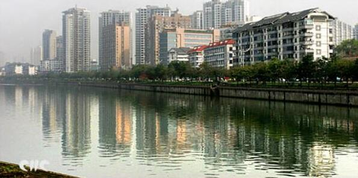
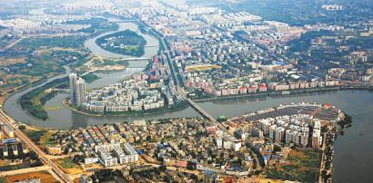
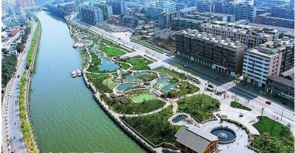
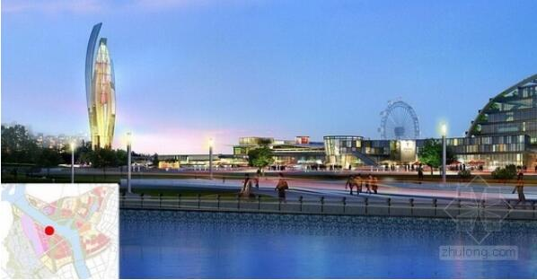

morly旅游圈
成都（Chengdu），简称蓉，是四川省省会，1993年被国务院确定为西南地区的科技、商贸、金融中心和交通、通讯枢纽，是设立外国领事馆数量最多、开通国际航线数量最多的中西部城市 。 2015年由国务院批复并升格为国家重要的高新技术产业基地、商贸物流中心和综合交通枢纽，西部地区重要的中心城市 。 成都位于位于四川盆地西部，成都平原腹地，成都东与德阳、资阳毗邻， 西与雅安、阿坝接壤，南与眉山相连。成都市下辖锦江区等10区5县，代管4个县级市。 2014年末，成都市辖区建成区面积604.1平方公里，常住人口1442.8万人 。
成都是“首批国家历史文化名城”和“中国最佳旅游城市”，承载着三千余年的历史，是古蜀文明发祥地，中国十大古都之一。 拥有都江堰、武侯祠、杜甫草堂、金沙遗址、明蜀王陵、望江楼、青羊宫等众多名胜古迹和人文景观。 联合国世界旅游组织第22届全体大会将于2017年、第22届世界航线发展大会将于2016年在成都举办。
今年秋季去哪里游玩？其实不需要去太远，便可以去游玩到一些好玩，小编在此为你推荐几个成都游玩的好去处，和朋友家人一起去游玩吧！
成都欢乐谷
成都欢乐谷占地51万平方米，由阳光港、欢乐时光、加勒比旋风、巴蜀迷情、飞行岛、魔幻城堡、飞跃地中海、欢乐光年及丝路传奇9大主题区域组成，拥有百余项景点。其中设置了159项体验观赏项目，包括超过54项娱乐设备设施、58处人文生态景观、27项艺术表演、20项主题游戏和商业辅助性项目。
【地点】四川省成都市金牛区
【门票】230元
成都宽窄巷子
宽窄巷子位于四川省成都市青羊区长顺街附近，由宽巷子、窄巷子、井巷子平行排列组成，全为青黛砖瓦的仿古四合院落，这里也是成都遗留下来的较成规模的清朝古街道，与大慈寺、文殊院一起并称为成都三大历史文化名城保护街区。
【地址】四川省成都市锦江区
【门票】免费
成都熊猫基地
成都大熊猫繁育基地位处成都市北郊斧头山，距市区10公里，有一条宽阔的熊猫大道与市区相连，现已成为国内开展大熊猫等珍稀濒危野生动物移地保护的主要基地之一。常年饲养有大熊猫、小熊猫、黑颈鹤、白鹳和白天鹅、黑天鹅、雁、鸳鸯及孔雀等动物。在由68科300多种高等植物所构成的基地人工生态植被内栖息着野生鸟类29科90多种。现在的基地，翠竹葱茏，绿树成荫，鸟语花香，空气清新，自然山野风光和优美人工景观巧妙融合，各种珍稀濒危动物在其中悠然自得地生息繁衍。
【地址】成都市外北熊猫大道26号
【门票】58元
成都环球中心
新世纪环球中心位于成都高新区天府大道与绕城高速交汇处,占地面积约1300亩,总建筑面积约176万平方米,是省市两级政府确定的打造世界现代田园城市的重大项目,是会展旅游集团继成功开发世纪城新会展中心之后的又一力作.
【地址】成都市高新区天府大道北段1700号
【门票】免费
成都锦里
锦里位于四川省成都市武侯区武侯祠大街。传说中锦里曾是西蜀历史上最古老、最具有商业气息的街道之一，早在秦汉、三国时期便闻名全国。现在，锦里占地30000余平方米，建筑面积约14000平方米，街道全长550米，以明末清初川西民居作外衣，三国文化与成都民俗作内涵，集旅游购物、休闲娱乐为一体。
【地址】成都市武侯祠大街231号
【门票】免费
内容整理至网络，如有侵权，请联系我们！1255394075@qq.com
 